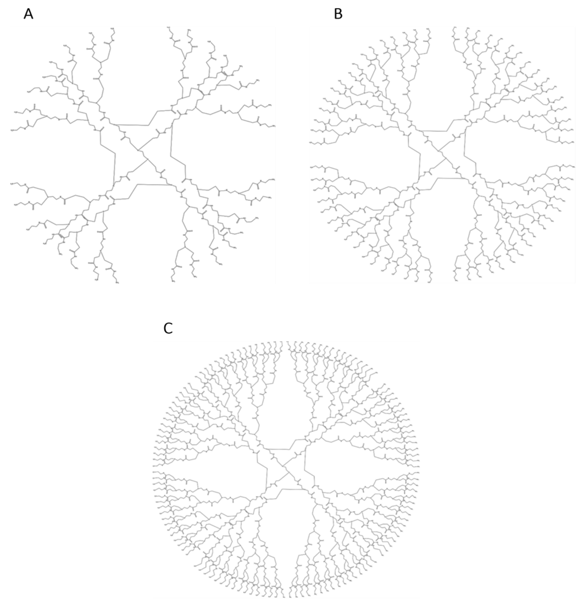
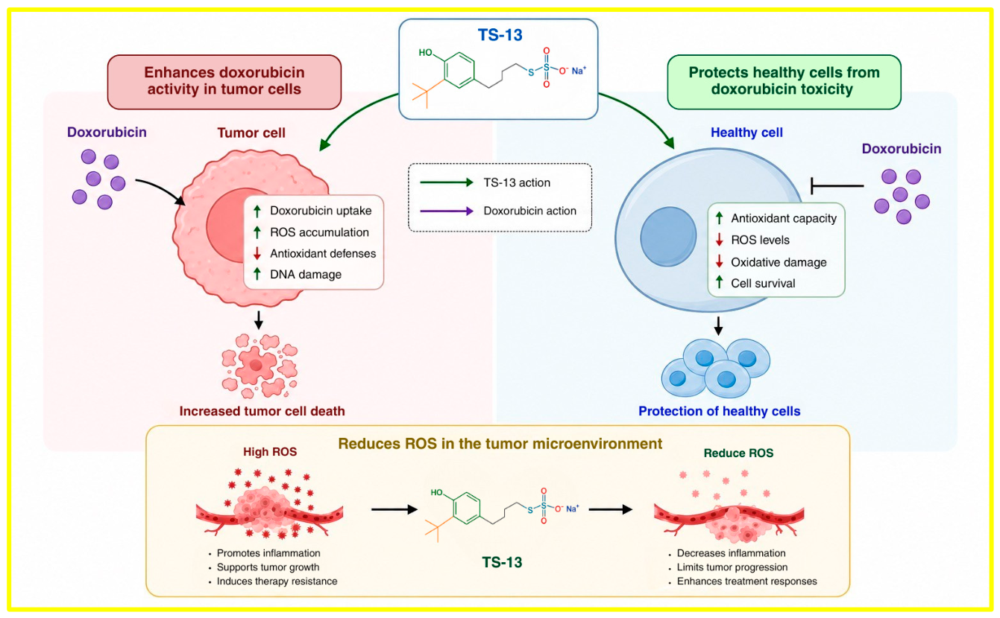
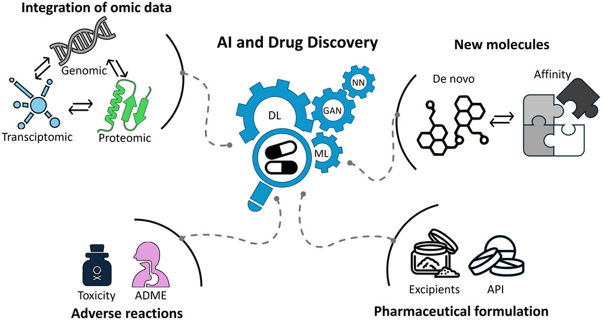
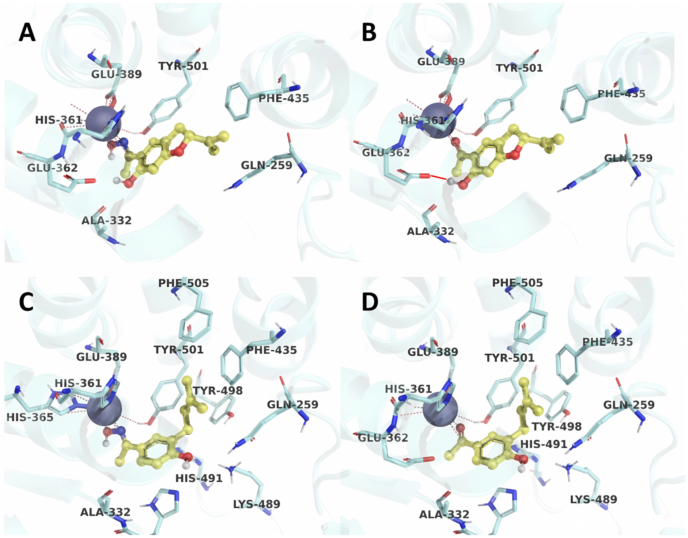
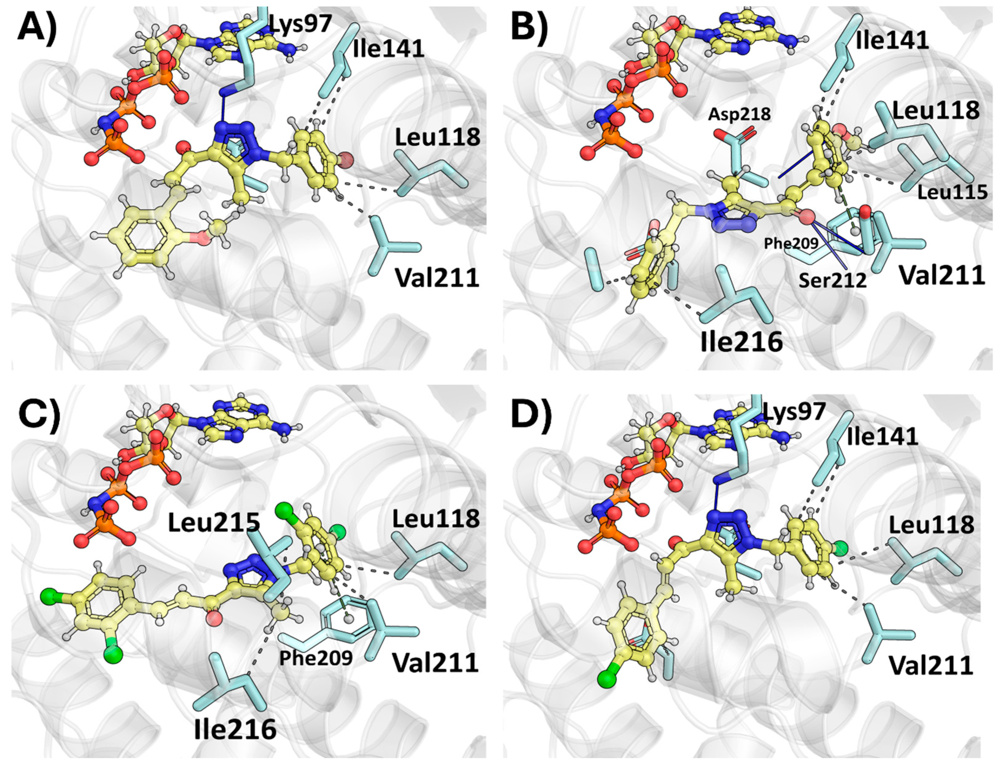
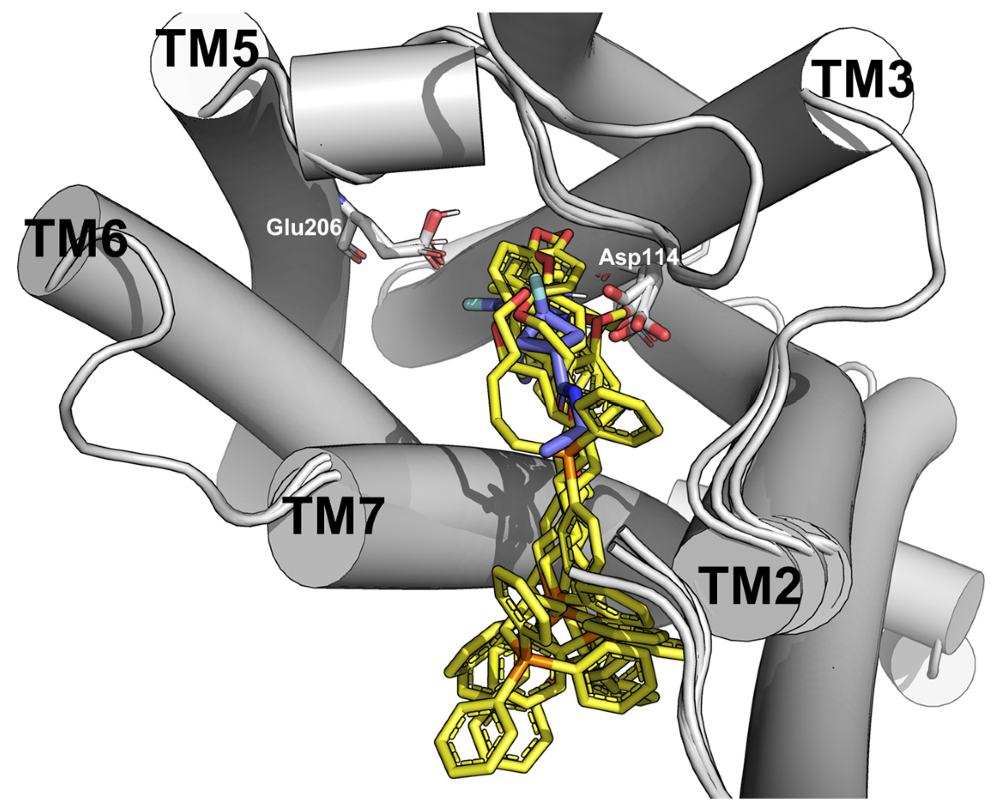
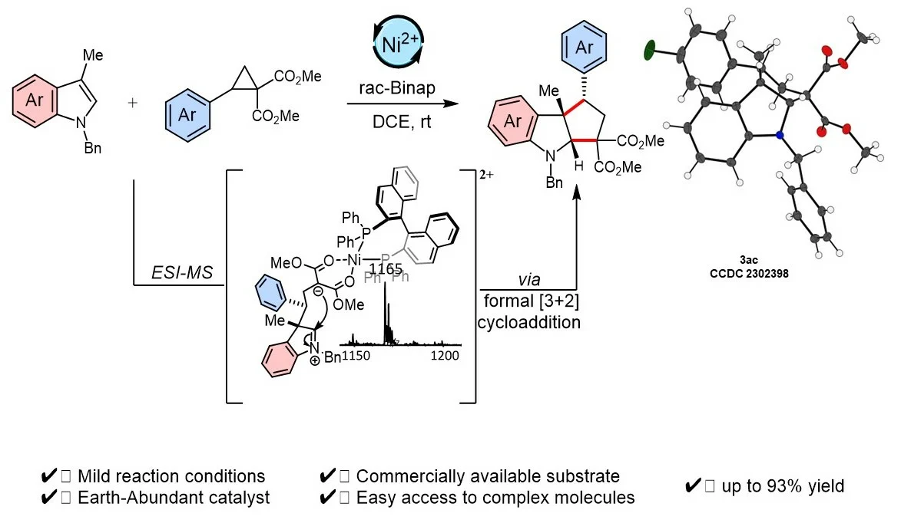
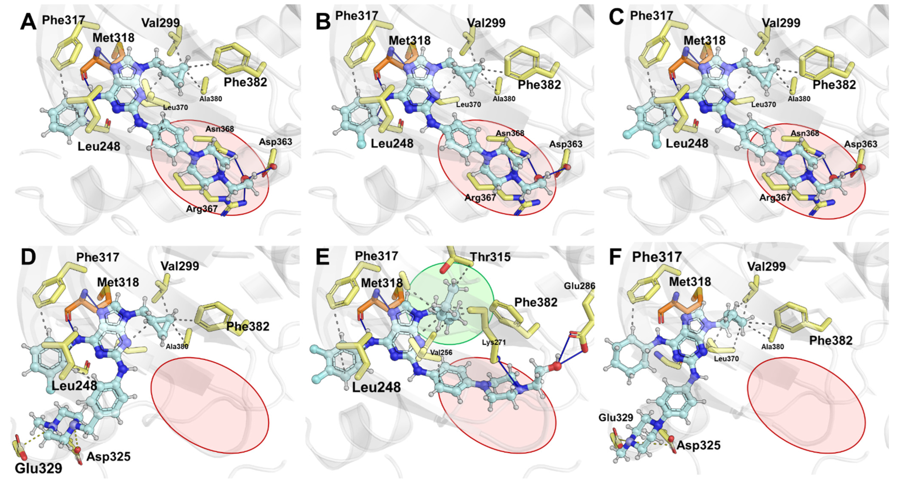

Graphical abstract
Polymers 2025, 17(2), 219
Polymers 2025, 17(2), 219
2025

Publicaciones
Publicaciones del laboratorio organizadas como una galería visual, utilizando los graphical abstracts como puerta de entrada a cada investigación.
Investigación publicada
Los graphical abstracts permiten identificar rápidamente el enfoque de cada trabajo sin perder la organización cronológica y bibliográfica del sitio.

Revisión sobre antioxidantes sintéticos que amplía su discusión más allá de la preservación de alimentos y aborda sus perspectivas traslacionales y relevancia biomédica.
Ver publicaciónSeis publicaciones

2025

2025

2025
![Graphical abstract — First in class pyrrolo[2,3-d]pyrimidine derivatives fused to fluorobenzylpiperidines as dual ligands of acetylcholinesterase and histamine H3 receptor](../assets/img/publications/2025-archpharm-e2400387.jpg)
2025

2025

2025
Tres publicaciones

2024

2024

2024
Coloca las imágenes originales dentro de assets/img/publications/ utilizando los nombres definidos en este archivo. Si alguna imagen todavía no está disponible, la tarjeta mostrará automáticamente un placeholder gráfico de SB²CS en lugar de un icono de imagen rota.